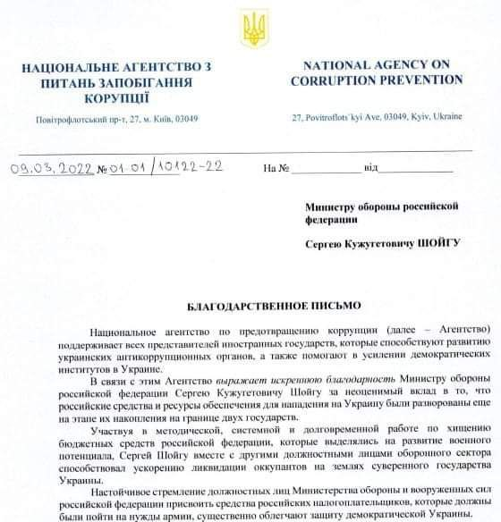

НА УКРАЇНСЬКІЙ
НА УКРАЇНСЬКІЙ
Національне агентство з питань запобігання корупції приносить подяку
Міністру оборони РФ через те, що розікрав дані йому гроші на зміцнення
армії ще на етапі її формування. Ось фото:

24 лютого війська РФ прийшли на територію України та почали вбивати
мирних громадян. Спочатку вони знищили майже всі військові об'єкти,
а потім почали бомбити мирні квартали. План путіна (нове правило
орфографії: це ім'я можна писати з малої літери) був розрахований на
3-4 дні, але його манямірок тріснув коли Українці зустріли його війська
не хлібом і сіллю, а кулею і Бандерівськім смузі. Наразі у російської
армії втрати оцінюються в 15К особового складу та
багааааааааааааааааато техніки. Ті окупанти що поки живі - налякані та
хочуть до мамки. Україна виграє. Слава Україні!